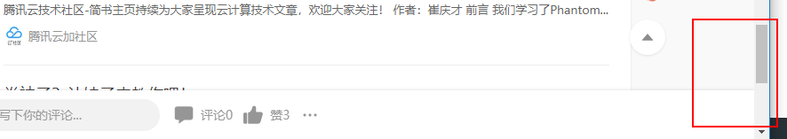
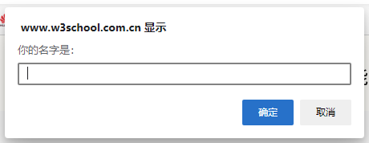
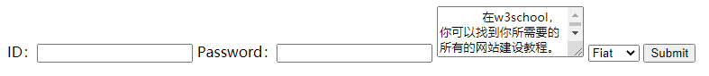

Python selenium介绍安装API介绍浏览器控制切换标签页selenium如何管理标签管理标签页滑动滚动条使用JS脚本使用浏览器快捷键快速定位到指定元素页面没有滚到底chrome启动参数元素查找元素等待隐式等待元素加载显式等待元素加载元素状态判断获取元素文本innerText、outerText等处理frame弹窗处理文件上传表单处理HTML表单selenium操作表单下拉框select处理
selenium是C/S架构的，在python中安装selenium模块，并编写脚本，这个脚本就是client。下载浏览器驱动，这个驱动就是server。client使用http协议发送信息给server，server去控制浏览器执行操作。http的body使用的是selenium自己的基于json 的协议，名为JSON Wire protocol。
selenium的三大组件除了webdriver外，其他两个是selenium IDE、selenium grid。
selenium直接使用pip安装即可，之后还需要安装浏览器的驱动，比如火狐的geckodriver。
对于Windows，只需要下载对应的EXE文件后，把它放在Python安装目录的scripts目录中即可。其实浏览器驱动可以放在任意的位置，只需在创建webdriver对象是执行驱动的路径即可。
对于Linux，下载driver的zip包，解压后放入/usr/bin目录即可。
| API | 说明 |
|---|---|
selenium.common.exceptions | 异常类的包 |
selenium.webdriver | 所有驱动浏览器相关的API都在这个包里 |
selenium.webdriver.__init__.py | 导入webdriver类和options类，并取别名 |
selenium.webdriver.chrome.webdriver.py | 里面就一个WebDriver类 |
selenium.webdriver.chrome.options | 里面就一个Options类 |
selenium.webdriver.remote.webdriver.py | 仅有一个WebDriver类，是其他webdriver的父类 |
selenium.webdriver.remote.webelement.py | 仅有一个WebElement类，表示webdriver找到的元素 |
selenium.webdriver.remote.switch_to.py | 处理frame的 |
selenium.webdriver.firefox.webelement.py | 火狐有自己的webelement类 |
selenium.webdriver.common.by.py | 只有一个By类，用来指定查找元素时用的方式 |
selenium.webdriver.common.keys.py | 只有一个Keys类，定义了一些按键，比如ctrl、shift |
selenium.webdriver.common.action_chains | 只有一个ActionChains类，可以构建该类的对象，完成组合键操作 |
selenium.webdriver.support.wait.py | 只有一个WebDriverWait类，显示等待相关 |
selenium.webdriver.support.expected_conditions | 这个模块里每一个类都代表了一种条件，与显式等待相关的 |
selenium.webdriver.support.select.Select | 用来处理hutml的select元素 |
x
81191from selenium import webdriver23# 等效于：4# browser=webdriver.chrome.webdriver.WebDriver()5browser=webdriver.Chrome()6try:7 browser.get("https://cn.bing.com")8finally:9 browser.quit()browser对象有如下成员
back()/forward()：后退/前进close()：关闭当前窗口，因为现在浏览器都是多标签，所以其实是关闭当前标签quit()：关闭所有窗口，其实是关闭当前窗口（不管它开了多少个标签）get()：再当前窗口加载新页面save_screenshot(filename)：保存当前页面截图，png格式get_screenshot_as_file(filename)：同上maximize_window()/minimize_window()：最大化最小化窗口execute_script(script,*args)/execute_async_script(script,*args)：执行JS脚本，args的用法：driver.execute_script('window.open(arguments[0])', url)，等同于driver.execute_script('window.open("{}")'.format(url))。不管执行的JS脚本有没有返回值，`execute_script得到的都是None，除非再JS种显示使用return，比如driver.execute_script('return document.getElementById("kw")')，这里return回来的对象会被自动转成selenium的webelement对象。current_window_handle：当前窗口的句柄，是一个字符串window_handles：所有窗口的句柄不要使用浏览器来切换标签页。快捷键只能针对页面内容，比如ctrl+enter（在新标签中打开链接），ctrl+a（全选）；不能针对浏览器，比如ctrl+f（搜索）、ctrl+t（打开新标签）。故不能使用下面这种方式。
xxxxxxxxxx1from selenium.webdriver.common.keys import Keys2from selenium.webdriver.common.action_chains import ActionChains34browser=webdriver.Chrome()5ActionChains(browser).key_down(Keys.CONTROL).send_keys("t").key_up(Keys.CONTROL).perform()应该使用JS——driver.execute_script('window.open(arguments[0])', url)。
当创建一个webdriver对象的时候，就会打开一个浏览器窗口，附带一个空白标签，使用webdriver的get()方法，让当前标签页打开url。
有个问题是新开标签页后，浏览器的焦点虽然切换到了新标签页上，当前也是显示新标签页的内容，但是selenium还是指向原标签，即driver.current_window_handle的值还是原标签。需要使用driver.switch_to.window()切到新标签。
结论：如果在打开了多个标签的浏览器上用switch_to切换标签，浏览器的焦点和current_window_handle是会跟着移动的。但是用JS打开新标签，浏览器焦点虽然移动了，current_window_handle却没有动。
如果需要频繁开多标签，可以写一个类来管理标签页，比如：
xxxxxxxxxx1691from selenium import webdriver2from time import sleep34class TabManager:5 def __init__(self, driver):6 self.driver = driver7 self.handles = {}89 def open_tab(self, url, name):10 """11 新开标签，并保存其handle。12 """13 self.driver.execute_script('window.open(arguments[0])', url)14 self.driver.switch_to.window(self.add_handle(name))15 print('<TabManager.open_tab>', name, self.driver.current_window_handle)1617 def add_handle(self, name):18 """19 当使用TabManager外的方法新开标签后，使用该方法来保存新开的标签的handle。20 """21 for handle in self.driver.window_handles:22 if handle not in self.handles.values():23 self.handles[name] = handle24 break25 return self.handles.get(name)2627 def close_tab_by_name(self, name):28 """29 浏览器焦点会切换到新标签，关闭它后，再切换回原标签。功能是实现了，方式有点挫。30 """31 if self.handles.get(name) is None:32 return33 previous_handle = self.driver.current_window_handle34 self.driver.switch_to.window(self.handles[name])35 self.driver.close()36 self.driver.switch_to.window(previous_handle)3738 def close_tab_by_url(self, url):39 pass4041 def close_tab_by_title(self, title):42 pass4344 def switch_tab_by_name(self, name):45 if self.handles.get(name) is None:46 return47 self.driver.switch_to.window(self.handles[name])4849 def switch_tab_by_url(self, url):50 pass5152 def switch_tab_by_title(self, title):53 pass545556def launch():57 options = webdriver.ChromeOptions()58 options.add_argument('--start-maximized')59 driver = webdriver.Chrome(options=options)60 tab_manager = TabManager(driver)61 try:62 driver.get('https://www.baidu.com')63 print('baidu', driver.current_window_handle)64 tab_manager.add_handle('baidu')65 tab_manager.open_tab('https://cn.bing.com', 'bing')66 tab_manager.close_tab_by_name('baidu')67 sleep(3)68 finally:69 driver.quit()
不管用什么方式滑动滚动条，必须要再滑动之后，等待元素，因为现在都是懒加载，滑动完成后，元素可能还没加载出来。
browser.execute_script('window.scrollTo(0,document.body.scrollHeight)')，scrollTo的两个参数就是页面的x，y坐标，比如要滑倒最左边最上边，用0，0；最右边，最下边，用document.body.scrollWidth，document.body.scrollHeight。
driver.find_element_by_xpath('//body').send_keys(Keys.END)，找到body元素然后发送END键。
或者直接给浏览器发送快捷键ActionChains(driver).send_keys(Keys.END).perform()
END：拉到页面底部
HOME：拉到页面顶部
做法就是调用JS的element对象的focus()方法
xxxxxxxxxx71e=driver.find_element_by_xpath('//div[@id="__next"]')2# e会变成JS的element对象并替换argument[0]3# execute_script(script,*args)，所以如果有多个webelement的话，把arguments[0]替换为arguments[1]、arguments[2]..即可4driver.execute_script("arguments[0].focus();",e)56# 另一种方式，将鼠标放到指定元素的中间，如果元素没有在窗口中，则滚动页面7ActionChains(self.driver).move_to_element(element).perform()
不管用JS还是快捷键，页面都没有滚动到最低端，效果如上图。直接再浏览器中明明是可以的，用selenium却不可以。只能在滚动后，再用JS脚本执行更的滚动window.scrollBy(0,500)，向下滚动500个像素，向下/向右滚动用正数，向上/向左滚动用负数。
比如下面的chrome headless，常用的还有 --start-maximized 最大化
新版selenium不再支持phantomJS，建议使用chrome headless。
正常安装selenium和chromedriver，使用时加上参数即可。
x
151from selenium import webdriver23options = webdriver.ChromeOptions()4options.add_argument('--headless')5options.add_argument('--disable-gpu')6driver = webdriver.Chrome(options=options)7try:8 driver.get('https://www.baidu.com')9finally:10 driver.close()webdriver和webelement对象可以使用如下方法查找子元素。如果找到的元素有多个，则只取第一个元素。
find_element_by_idfind_element_by_name：根据html元素的name属性的值来查找find_element_by_xpathfind_element_by_link_text：根据字符串来查找链接元素，比如显示文本为【新闻】的链接find_element_by_partial_link_text：同上，但是可根据部分字符串，而不需要完全匹配find_element_by_tag_namefind_element_by_class_name：它的参数只能是1个class，如果元素有多个class，只要有1个匹配到，就算找到了该元素。如果希望元素的所有class都匹配，那不能用这个方法。find_element_by_css_selectorfind_element(By.ID, id)：需要指定查找的方式，比如根据id来查找将上面的find_element_*改为find_elements_*即可查找多个元素，找到后会存入一个list中返回。
driver.implicitly_wait(time_out_sec)
作用于整个driver，每次find element时，如果element没有被找到，就会等待，超出最长等待时间后还没找到，依旧会去执行下一步。
如果在timeout之内找到element，那就执行下一步，不会继续等待了。
和隐式等待效果一样，区别是它只等待指定的某一个element；如果超时了还找不到，抛出异常。
隐式等待和显式等待可以一起使用，等待时间取两者的最大值。
x
1# 官方例子，等待某一个元素消失2# 30：最长等待时间，second3# 1：等待期间每隔1秒去检查等待条件是否达成，默认是0.5秒4# (ElementNotVisibleException,)：可迭代对象，检查等待条件是否达成时，忽略部分异常，默认忽略NoSuchElementException5WebDriverWait(driver, 30, 1, (ElementNotVisibleException,)).until_not(lambda x: x.find_element_by_id("someId").is_displayed())67# untile_not：接受一个callable作为参数，直到callable返回False，或者超时，才会去执行后面的代码8# 返回False指的是返回False这个bool值，而不是仅仅是表示【假】的这种值9# 这个callable接受一个参数，而且传入的应该就是driver1011# -----------1213from selenium import webdriver14from selenium.webdriver.support.wait import WebDriverWait15from selenium.webdriver.support import expected_conditions as EC16from selenium.webdriver.common.by import By1718locator = (By.LINK_TEXT, 'CSDN')19WebDriverWait(driver, 20, 0.5).until(EC.presence_of_element_located(locator))20# presence_of_element_located，当元素存在时，条件成立webelement对象有三个方法来判断元素的状态。is_displayed：使用一个JS算法来判断元素对用户是否可见。不能确保100%正确，毕竟它的算法也不是完美的。is_enabled：输入框或者按钮是否时可用的。is_selected：单选框或者复选框是否是被选中的。
隐式等待中用到的expected_conditions模块中有很多类，也是对元素状态的判断。
| 类 | 作用 | 调用的函数 |
|---|---|---|
element_located_to_be_selected | 被选中 | is_selected |
element_located_selection_state_to_be | 被选中的状态 | 传入True表示期望的状态是【被选中】 |
invisibility_of_element_located | 不可见或不存在 | 是否可见的判断用is_displayed |
visibility_of_element_located | ||
visibility_of_any_elements_located | 定位器找到的所有元素中，有一个是可见的即可 | |
visibility_of_all_elements_located | 定位器找到的所有元素必须全是可见的 | |
element_to_be_clickable | 可以被点击 | is_displayed && is_enabled |
text_to_be_present_in_element_value | 定位到的元素的value属性的值，是否包含指定的字符串 | |
text_to_be_present_in_element | 判断元素中的文本是否包含指定文本 | 判断是否包含text in webelement.text |
webelement.text，元素中的文本。但是webdriver只会与可见的元素交互，如果元素不可见，webelement.text就只能拿到空字符串了。解决办法是使用webelement.get_attribute('innerText')
html元素和文本相关的属性有innerHTML、outerHTML、innerText 、outerText、value，除了value是表单类型元素（比如input）特有的外，其他都是所有元素都有的。
innerText获取元素内的所有文本。如果将元素的innerText属性重新赋值，意为将元素的所有子节点全部删除，取而代之的是一个新的文本。
JS代码div.innerText = "Hello world!";将修改html为<div id="content">Hello world!</div>
outerText用来读取文本时和innerText完全一样，给outerText重新赋值时，除了元素的子节点还包括元素自身都会被删除，然后被一个新的文本替代。
innerHTML表示元素的所有子节点HTML代码，不仅仅是文本，还包括标签。
outerHTML不仅包含子节点的标签，还包含元素自身的标签。
html文档可以引用其他的html文档，就是使用frameset和frame元素，frameset用来存放frame，frame引用其他的html文档。
使用selenium查找frameset的方式和查找其他元素的一样，但是查找frame之前，需要先切换一下，因为它引用了其他文档嘛。
xxxxxxxxxx41# 切换的依据是frame的name、index、或者是代表frame的webelement对象，其实用id也是可以的2driver.switch_to.frame('frame_name')3driver.switch_to.frame(1)4driver.switch_to.frame(driver.find_elements_by_tag_name("iframe")[0])html5已经不支持frameset和frame了，但是html4和html5都支持iframe。和frame一样，iframe也用来引用其他html文档，不同的是，它不用放到frameset中，而且它一样用来做图片或文字的悬浮容器，比如它可以用来做对话框。
frame之间还能不断嵌套，selenium可以用switch_to.frame一层一层地切入新的frame，另外还提供如下方法：
xxxxxxxxxx41# 切换到当前frame的父frame2driver.switch_to.parent_frame()3# 切换回主文档4driver.switch_to.default_content()三种弹窗常见的弹窗，alert()、confirm()、prompt()，其实同时同一种样式。不同的是：
alert只是一条消息通知弹窗，只有一个确定按钮
confirm有确定/取消两个按钮，并且可以返回的布尔值代表了用户是点击了确定，还是取消
prompt是一个带输入框的弹窗，也有确定和取消。返回值就是用户在输入框中输入的内容，点击取消得到null，什么都不输入就点击确定，得到空字符串。
xxxxxxxxxx21//这段JS代码将得到如下对话框，name会被赋值为用户输入的内容2var name = prompt("你的名字是：");
selenium的driver.switch_to.alert对象就是alert弹窗，它有如下的属性和方法
text
dismiss()
accept()
send_keys()
点击上传文件时一般会弹出上面的这种对话框，这已经不是selenium能控制的了，需要借助autoit来操作。具体做法是编写autoit的脚本→编译成exe文件→使用python去调用那个exe文件。autoit的用法看我相关笔记。
另一种做法时直接给将要上传的文件的路径send_keys给输入用的input元素，有些input元素没有输入框，只有一个选择文件的按钮，但是我觉得直接给input的value赋值也应该时可行的。
这种做法我并不提倡，selenium应该尽可能地模拟用户的操作，那个用户会直接给input输入文件的路径呢？
xxxxxxxxxx261<form action="/server_url" method="post" onsubmit="return beforeSubmit()">2 ID：<input id="username" type="text" name="username" />3 Password：<input id="password" type="password" name="password" />4 <textarea rows="3" cols="20">5 在w3school，你可以找到你所需要的所有的网站建设教程。6 </textarea>7 <select name="cars">8 <option value="volvo">Volvo</option>9 <option value="saab">Saab</option>10 <option value="fiat" selected="selected">Fiat</option>11 <option value="audi">Audi</option>12 </select>13 <button type="submit">Submit</button>14</form>15<script type="text/javascript">16 function beforeSubmit() {17 var username = document.getElementById('username').value;18 var password = document.getElementById('password').value;19 if (username.length < 6 || password.length < 6) {20 alert('格式不正确！');21 return false;22 } else {23 return true;24 }25 }26</script>
form标签的常用属性有：
表单中常见的HTML标签：
html事件：
事件不仅仅是针对表单，很多html元素都可以使用事件。事件属性是在当某个特定的事件发生时，执行一段JS代码。
selenium对表单的操作没有什么特别的，只有webelement有一个submit方法，该方法可以作用于表单内的任意一个元素，使用该方法后，整个表单都会被提交。
不过seleniumlibrary倒是有一个专门的FormElementKeywords类，提供了不少表单相关的关键字。
表单中如果有元素有disabled属性，不管该属性的值是什么，或者根本没有值，该元素就不可用，在表单提交时，该元素的值也不会被提交。所有html元素都可以使用disabled属性。
input(type为text或password)和textarea如果有readonly属性，则该元素的值不可被修改，但是表单提交时，还是会一起提交。
select_cars=Select(driver.find_element_by_name('cars'))
获取select元素的webelement对象，并以此为参数创建Select对象。
xxxxxxxxxx41<select name="cars">2 <option value="volvo">Volvo</option>3 <option value="fiat" selected="selected">Fiat</option>4</select>使用select对象时，有如下几点要注意：
deselect_*方法都是针对多选下拉框的，我目前只见过单选下拉框，所以这个先不管